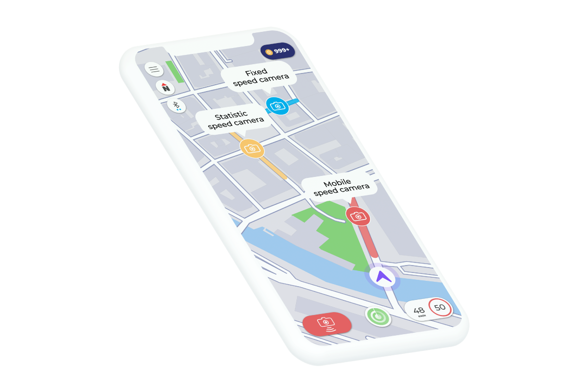

Den visuelle identitet for Hopper skulle kunne favne bredt: fartkontrol, samkørsel, biler, miljø m.m. Måtte ikke afsløre hvad virksomhedens slutmål er. Logoet blev derfor navnetræk med indbygget bomærke i form af O’et. O’et kan animeres som en hoppende bold, der kan morphes til eksempelvis en bil, der kører ud af billedet eller en map pin. På den måde opnås et multi-logo, der kan signalere mange værdier på én gang. Dertil sub-logoer til Hoppers sub-produkter.
logo
_
animation
_
Hopper appens animationer anvendes i forskellige brugsscenarier: errors, success, loading, info etc. Animationerne er alle lavet i Adobe Illustrator/After Effects og er herefter eksporteret ud som lottie filer, som app-udviklerne nemt har kunnet implementere direkte i appen.
app design
_
Hoppers hovedprodukt er Hopper appen, som bruges under bilkørsel til at navigere, få advarsler mod fartkontrol, oprette grupper man kan følge på kortet, købe ting i app-shoppen for sine optjente loyalitetspoint: Hopper Coins etc. Appen fungerer sammen med Hoppers Bluetooth hardware produkter Hopper Go, Hopper OBD og Hopper LINK, som låser op for forskellige features i appen.

UX og prototyping
_
Eksempel på high fidelity og low fidelity prototyper produceret i Invision Studio og Marvel
ikoner
_
Ikonerne for Hopper er tegnet med en blød streg for at forstærke og relatere til de bløde værdier, som Hopper brandet ønsker at udstråle.
emballage
_
Til det første Hopper produkt, Hopper Trafikalarm, designede vi en papemballage, som skulle kunne trække opmærksomhed og skille sig ud fra konkurrenterne i butikkerne. Det var vigtigt for os, at opnå en placering af produktet direkte på butiksdisken, hvorfor vi også designede et kompakt salgsdipsplay á 10 stk.
I takt med at Hoppers produktsortiment voksede, havde vi dog brug for en billigere produktion af emballage, som samtidig også skulle have et mere eksklusivt look, da de nye produkter ville blive prissat højere end trafikalarmen. Derfor indgik vi et samarbejde med en kinesisk producent, hvor jeg som kontaktperson sørgede for, at emballage-etuierne blev tilpasset Hoppers brand i forhold til form, farve, materiale, indlæg, logoprint etc.
marketing
_
Et udpluk af Hoppers marketingsmateriale som har bestået af magasin-annoncer, facebook-annoncer, digitale banner reklamer, instore POS-materiale så som roll-ups og A5 akryldisplays, vouchers, kataloger til forhandlere/slutbrugere etc.
video
_
To eksempler på videoer produceret for Hopper. Den første video er til Facebook og promoverer en ny feature i appen. Den anden videos formål er loop-afspilning på en skærm i butikken. Kunden skal kunne hoppe direkte ind i fortællingen, når hun kommer forbi skærmen i butikken. Derfor er den delt op i en række små minifilm, som skaber opmærksomhed omkring produktets mange features og fordele.